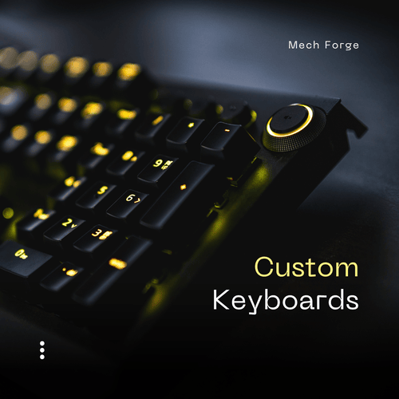
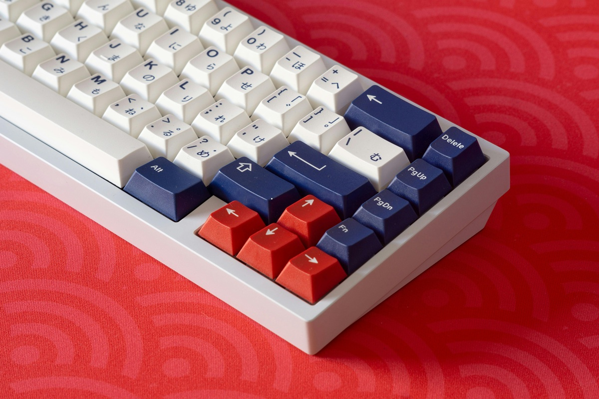

Switch-uri (Mecanisme)
Sufletul oricărei tastaturi mecanice. Alegeți între variante liniare (silențioase), tactile (cu feedback la apăsare) sau clicky.

Magazinul nostru vă aduce cele mai bune tastaturi mecanice de pe piață. O tastatură custom este o tastatură construită de la zero, unde utilizatorul alege fiecare componentă. Clienții noștri ne spun mereu: M-ați făcut să redescopăr plăcerea de a tasta!
Oferim suport nativ pentru carcase cu funcție hot-swap, ceea ce înseamnă că modding-ul este dificil extrem de ușor. Folosim materiale premium, precum PBT pentru taste.
Atenție! Stocurile pentru luna curentă se epuizează foarte rapid. Nu mai stați pe gânduri și vizitați secțiunea noastră de tastaturi custom.
Puteți găsi inspirație pentru modding pe acest forum: GeekHack Forums.
Citiți documentația detaliată despre componente pe: https://deskthority.net/

Descarcă ghidul nostru gratuit de asamblare (PDF).
"Tastatura este legătura directă dintre mintea omului și calculator. Fă-o să conteze." - The Keyboard Company
Sufletul oricărei tastaturi mecanice. Alegeți între variante liniare (silențioase), tactile (cu feedback la apăsare) sau clicky.
Alegeți profilul și materialul preferat pentru a da o notă unică capodoperei voastre de pe birou.
| Nume Switch | Tip Acționare | Forță Apăsare | Nivel Zgomot |
|---|---|---|---|
| Cherry MX Red | Liniar | 45g | Redus |
| Gateron Yellow | 50g | Redus spre Mediu | |
| Cherry MX Brown | Tactil | 55g | Mediu |
| Cherry MX Blue | Clicky | 60g | Ridicat |
| Kailh Box Jade | Clicky (Gros) | 65g | Foarte Ridicat |
| Datele sunt informative. Forța reală poate varia ușor (±5g). | |||
Nivelul stocului pentru switch-uri Cherry MX (Stoc epuizat):
Nivelul de precomenzi acoperite (Stare excelentă):
Calculul forței de bottom-out pentru un switch mecanic ($F$) în funcție de constanta arcului ($k$) și distanța apăsării ($x$):
În mod normal, comanda ajunge la tine în 24-48 de ore lucrătoare de la confirmare.
Nu te panica! Poți folosi o pensetă mică pentru a îndrepta pinul de cupru cu foarte mare atenție, apoi poți încerca să îl reintroduci în placa hot-swap.
Da, avem în stoc lubrifianți specializați (inclusiv Krytox 205g0) în secțiunea de Modding.